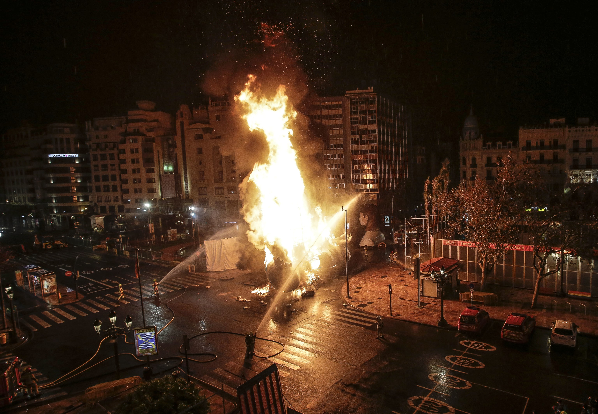

Las fallas de Valencia
La UNESCO incluyó a las Fallas de Valencia en su Lista Representativa del Patrimonio Cultural Inmaterial de la Humanidad, ¿quieres saber por qué? ¡Te lo contamos!

8 planes que no debes perderte
La capital del Túria se transforma durante la semana fallera y ofrece multitud de eventos y planes que hacer. No puedes perderte estos 8 planes si quieres disfrutar al máximo de las Fallas.

Suscríbete a nuestra newsletter
Todavía quedan eventos por cerrarse y hasta última hora no se sabrán con certeza. Suscríbete a nuestra newsletter para mantenerte informado de las últimas noticias falleras de 2022.